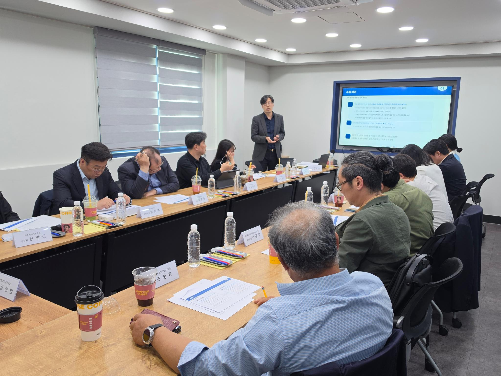
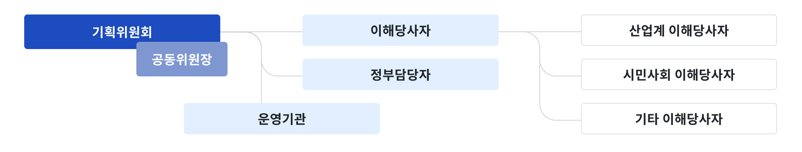
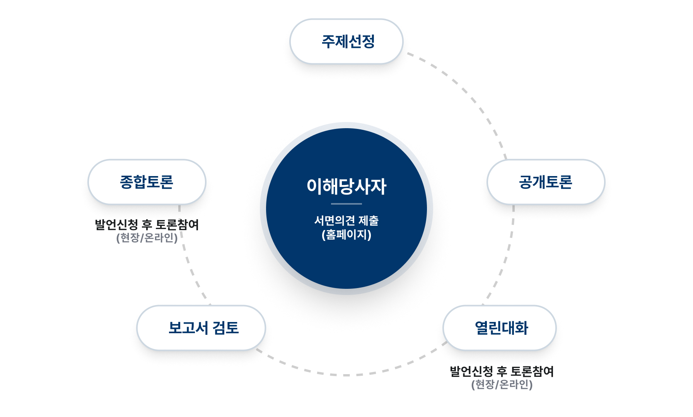

교육안내
화학사고로부터 국민의 안전을 지키겠습니다.
배경 및 목적

“화학물질로부터 안전한 지속가능 사회”는 우리나라 국민 모두가 바라는 모습입니다. 화학안전 정책을 마련하고, 이행하고, 평가하여 더 안전한 사회로 발전하기 위해서는 정부와 기업과 국민 등 관련된 주체들의 노력과 협력이 필요합니다. 환경부는 「화학물질의 등록 및 평가 등에 관한 법률」, 「화학물질관리법」 그리고 「생활화학제품 및 살생물제의 안전관리에 관한 법률」을 마련하였고, 기업은 이들 법률에서 요구하는 여러 가지 책임을 이행하고 있습니다. 하지만 이러한 노력이 정말로 “화학물질로부터 안전한 지속가능 사회”를 만들고 있는지 정부도 기업도 국민들도 아직 확신할 수 없습니다.
“화학물질로부터 안전한 지속가능 사회”라는 목적지가 어디인지 그리고 그곳에 가는 방법은 무엇인지 아직 분명하지 않기 때문입니다. 한국사회는 제도가 없어서 위험해지는 시대를 벗어났습니다.
이제는 여러 주체들이 목적지를 합의하여 화학 안전을 실제로 이루는 나라가 되어야 합니다. 우리는 이것을 내실있는 제도 이행이라고 부릅니다. 화학안전정책포럼은 시민사회단체와 산업계 등 모든 화학안전 이해당사자가 한 자리에 모여 환경부와 함께 지혜를 모아 제도이행 방안을 만드는 소통과 협력의 자리입니다. “화학물질로부터 안전한 지속가능 사회”가 무엇인지 국가적 목표를 함께 마련할 것이고, 이 목표를 향한 일관된 정책 추진 기반을 마련할 것입니다. 또한 제도가 내실있게 이행되는지 함께 점검하여, “화학물질로부터 안전한 지속가능 사회”를 국민 모두가 느낄 수 있도록 만들고자 합니다.
경과
환경부는 2021년 5월부터 ‘이해당사자’를 모집하고 범국민 소통·협력 플랫폼을 시범운영하였습니다. 이 경험을 토대로 환경부는 2022년부터 본격적으로 화학안전정책포럼을 운영하고 있습니다. 그간 진행된 사항은 연도별 운영 연혁에서 확인이 가능합니다.
운영방법
화학안전정책포럼 운영 등에 관한 규정(환경부훈령)을 알고싶다면 다운로드 버튼을 클릭하세요. (2022.12.20. 제정)
화학안전정책포럼의 운영규정을 알고싶다면 다운로드 버튼을 클릭하세요. (2023.10.25 개정)
운영절차
-
01.주제 선정이해 당사자 의견 수렴
※ 기획위원회: 해당 연도 공식 주제 결정 -
02.준비회의기획위원, 기획위원회에서 정한 발제자 및 토론자가 개최
-
03.공개토론회온라인 화상회의를 이용한 토론회 개최
→ 전국 이해 당사자들에게 주제의 쟁점 등 공개 -
04.열린대화이해당사자의 서면 의견 수렴
→ 쟁점에 대한 토론 진행
※ 사전발언 신청 이해당사자: 온라인 또는 현장 발언으로 토론 참여 -
05.보고서 검토※ 기획위원회: 보고서 초안을 이해당사자에게 회람
※ 이해당사자: 토론 결과 확인 -
06.종합토론해당 연도에 다룬 토론내용 종합 정리
※ 이해당사자: 서면의견, 사전발언 신청으로 토론 참여
구성
화학안전정책포럼 주제와 일정은 기획위원회 회의에서 결정됩니다. 기획위원회는 시민사회단체 이해당사자, 산업계 이해당사자, 환경부 각 4명(총 12명)으로 구성됩니다.
시민사회단체와 산업계 기획위원은 각 분야별 이해당사자들이 직접 선출합니다. 기획위원회 회의결과는 이해당사자들에게 공개되며, 이해당사자들은 효과적인 운영을 위한 제안을 할 수 있습니다.

이해당사자
이해당사자 등록
화학안전에 이해(利害)를 가진 단체나 개인은 누구나 이해당사자로 등록 신청할 수 있습니다.
이해당사자 등록 시 토론에서 발언 기회를 가질 수 있으며, 토론 결과에 대한 서면의견도 제출할 수 있습니다.
- 단체 이해당사자 신청(훈령 별지 1호, 3호)
- 개인 이해당사자 신청(훈령 별지 2호, 4호)
이해당사자가 단체인 경우 담당자 변경
구제적인 변경방법 및 절차 등에 대하여는 공지사항을 참조하시기 바랍니다.
- 단체 이해당사자 담당자 변경신청(운영규정 별지 1호)
이해당사자 자격 종료
화학안전정책포럼 이해당사자로 더 이상 활동을 하지 않을 경우 자격 종료 신청을 할 수 있습니다.
자격종료 신청이 접수되면 화학안전정책포럼 운영기관은 해당 이해당사자의 정보를 관리목록에서 삭제합니다.
- 단체 이해당사자 신청(훈령 별지 6호)
- 개인 이해당사자 신청(훈령 별지 7호)
이해당사자 참여방법
